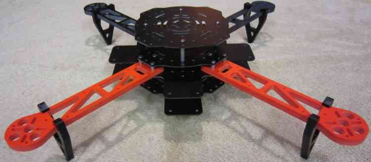

Archived: Hoverthings Flip Sport Quadcopter¶
Warning
ARCHIVED ARTICLE
The frame is no longer in production/available for purchase. Some of the instructions cover PX4FMU/PX4IO, which is no longer supported.
The Hoverthings FLIP Sport is very easy to build resulting in a remarkably sturdy and very high performance little quadcopter. The FLIP Sport is well suited to FPV and GoPro photography and videography and can even incorporate a brushless gimbal.
{kind=link}
Why a FLIP Sport?¶
The easiest inexpensive high quality build your own project is either the F330 or 450 DJI FlameWheel QuadCopter.
The F330 build is detailed elsewhere and the F450 is pretty much identical.
I really love those little FlameWheels for delivering many hours of fun and resisting my every effort to destroy them.
This time I thought I’d try and kick it up a notch, something even more indestructible and maybe even more fun.
The Flip frame kit is $89.00 from Hoverthings.
In addition to the standard Sport frame kit I also purchased an extended tab pair of center frame pieces and some extra 7/8” stand offs.
It is billed as being nearly indestructible and short of direct Nuclear blast effects, they are probably right.
The frame arms on these Flips are billed as being incredibly stiff and incredibly strong.
The arms are CNC milled high density 1/4” thick fiberglass and are very stiff, they should be able to withstand a lot of punishment.
The frame centers are also very strong and stiff fiberglass and it it seems likely all of it is G10.
This is a small 380 size frame and will accommodate 10” propellers (Right between the Flamewheel F330 and F450.)
{kind=link}
What to get¶
A Hoverthings Flip Sport Frame (approx $89.00 USD).

Two tabbed center sections and eight 7/8” standoffs (e.g. similar to these).
Four DJI motors for Flamewheel from Amain Hobby for $24.00 each.
A 20 or 25 Amp four in one ESC from Off the Grid Water for $40.00.
A Pixhawk compatible autopilot.
A GPS and Compass Module module.
Two normal and two reverse rotation DJI compatible Gemfan 10” carbon filled propellers from RC Dude.
A 2600 to 4000mah LiPo battery that fits between the 2 bottom plates.
PPM-Sum compatible receiver that works with your RC transmitter: FRSky(Delta 8), Futaba SBus or Spektrum satellite recommended.
For a PX4 system: A Pad of Kyousho Zeal Antivibration gel and four nylon or aluminum 1 1/2” threaded standoffs.

Assembling the frame¶
There are two different construction methods depending on whether you are using a Pixhawk or a PX4FMU/PX4IO.
For the Pixhawk you will use the second untabbed center plate on top as shown above, for a PX4FMU/PX4IO you will not.
Construction procedure is as follows (Use blue Locktite on all machine screws.)
Assemble the 2 tabbed center sections with four 7/8” standoffs on the 2 holes an inch apart 2” in from the end on 2 opposing sides.
Mount the arms to the top of one of the tabbed center frames using the short standoffs above the arm and use locktite.
Ensure that the standoffs mounting the two tabbed frame sections are on either side of your copter, not front to back.
Put the longer screws up through the tabbed plate and arms (2 on the outside 1 in the middle towards the middle) into the short standoffs.
Insert and your four in one ESC in between the arms with the excess Motor wire wrapped around the ESC
Leave about 3 inches of the 3 ESC motor wires sticking out under each arm (I also braided each motors wires on mine.)
Leave the ESC signal wires and power leads sticking out the back (between the 2 black arms on mine.).
Put an untabbed frame plate on top of your frame and secure with 12 screws to the top of the standoffs.
Install your DJI motors onto the frame arms with the supplied screws (use Locktite) with the motor wires facing the copter.
Thread the motor wires through the top frame arm opening and connect to the ESC wires (tuck excess lead into frame).
{kind=link}
Installing the Pixhawk autopilot¶
If you are using a Pixhawk, mount the 4 remaining 7/8” long standoffs, directly over the ones securing the bottom frame plates.
Place a 1” square of the Double-sided foam tape that came with the Pixhawk on the bottom of it at each corner.
Adhere the Pixhawk to the top of the frame with the arrow pointing to the front (between the 2 orange arms on mine).
Drill a hole through the top 2 frame plates near a frame arm near the edge on one side to accommodate the “safety” button.
Also mount the buzzer on the top frame member on one side where it will not interfere with a receiver installation.
Connect the 3DR power module to the Pixhawk connector and attach the power module out of the way also.
Solder the other end of the power module wires into a battery connector along with the ESC battery leads.
Install the ESC’s signal leads into the Pixhawk (Main Out) servo connectors (signal wire on top).
Red wire into 1, Orange into 2, White into 3 (with red and black below) and Brown into 4.
Install the GPS and compass wires into the GPS/Compass module and the Pixhawk.
Mount your receiver with double sided tape or Velcro on the top frame member to one side of (and not touching) the Pixhawk.
Run a single servo lead from the PPM-Sum output of the receiver to the left side (RC) input of the Pixhawk.
Or if it is a Spektrum Satellite run the Spektrum receiver lead to the Spektrum socket on top of the Pixhawk.
Mount the top untabbed frame member over the Pixhawk to the 7/8” standoffs you already installed above.
Mount the GPS module to the top center of the top frame plate using double sided tape.
Installing the PX4FMU/PX4IO autopilot¶
If you are using a PX4 we can’t use the top frame plate but can construct a little hard top if desired.
Cut a 2” by 2” rectangle from scrap plastic or fiberglass to support the PX4FMU/PX4IO.
Drill 4 holes in the rectangle that line up with the mounting hole in the PX4 board (roughly centered)
using 4 of the supplied black screws, mount 4 standoffs to the rectangle.
Insert the PX4FMU board (connector side up) over the 4 standoff studs and (carefully) screw 4 more standoffs over them.
Carefully fasten 4 nuts over the exposed studs securing the PX4FMU/PX4IO modules to the rectangle you made.
Place the PX4IO board over the PX4FMU board so that the connector is aligned and push down over the studs.
Place a 3/4” square piece of the Kyosho zeal at each edge of the “rectangle” between the standoff screws.
Adhere the rectangle to the center of the top of the frame with the servo connector facing to the rear (between the black frame arms).
Drill a hole through the top 2 frame plates near a frame arm near the edge on one side to accommodate the “safety” button.
Also mount the buzzer on the top frame member behind the PX4FMU/PX4IO stack such that it does not touch the “rectangle”.
Insert the power connector into the PX4IO board and solder the power leads and the ESC power leads to a battery connector.
Connect the buzzer and “Safety” button leads to the PX4FMU/PX4IO boards.
Install the ESC’s signal leads into the PX4IO board servo connectors (signal wire on top).
Red wire = right pins, Orange = 2nd from right, White = 3rd from right (with red and black below) and Brown = 4 from right.
Mount your receiver with double sided tape or Velcro on the top frame member to one side of (and not touching) the “rectangle”.
Ensure that your receiver does not block the USB connector on the side of the PX4FMU board (put it on the other side).
Run a single servo lead from the PPM-Sum output of the receiver to the far left side of the PX4IO servo connector.
Or if it is a Spektrum Satellite receiver run the Spektrum receiver lead to the Spektrum socket on top of the Pixhawk.
To use the remaining frame plate as a top cover screw the 4 standoffs to the top of the frame using existing holes near the edge.
Screw the plate to the 4 standoffs.
You can make your own top cover from a rectangle of plastic or fiberglass (I used Plexiglass, transparent is useful).
Ensure that the rectangle is of appropriate size and shape to permit you to secure the standoffs to the top plate.
Drill holes in the rectangle at the appropriate locations and if needed into the top frame member as well.
Attach the standoffs to the top frame member and to the Rectangular top you have made.
Adhere the GPS/Compass module to the center of the top of the top cover (it doesn’t matter which way it is facing).
Connect the GPS / Compass module to the PX4IO with the supplied wiring cables.
Note my setup uses an older style UBlox standalone GPS which I have mounted directly to the PX4 stack.
{kind=link}

Final assembly¶
Mount the battery between the lower frame sections and secure it with a Velcro strap inserted through the bottom frame plate slots.
Route and secure the wires and cables with Zip Ties as shown to prevent snagging on the propellers or anything else.
Ensure that the battery cable is secure but accessible to be plugged in when needed.

Setup and additions¶
Your Flip can now be configured as described elsewhere in this wiki for Pixhawk.
There is space for a 3DR telemetry radio and / or an OSD and FPV transmitter between the 2 side tabs.
An FPV camera may easily be mounted in front of the battery between the 2 front tabs.
If you use FPV keep its transmitter and antenna well away from the GPS.
The Flip has more than adequate power to support a GoPro camera with a brushless gimbal and the necessary extended landing gear.
I have had several crashes and only managed to break 2 props while trying (unsuccessfully) to cut down a 80’ bull pine tree with them.
This little copter is very high performance, fully acrobatic, surprisingly efficient and nearly indestructible and it is a blast to fly.